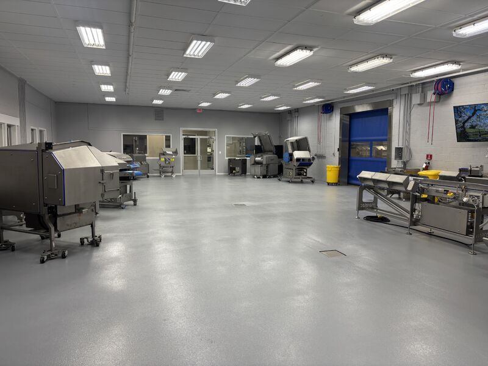

When the equipment is world class, the floor should be too. We recently partnered with Ross Industries on their demo room in Midland, Virginia, and the project is a perfect example of what happens when an equipment manufacturer holds their facility to the same standard as their machines.

Why a Demo Room Floor Matters
Ross Industries has been engineering meat and poultry processing equipment for over 50 years. Tenderizers, slicers, portioners, tray sealers: their machines are built to perform under the toughest conditions in food manufacturing. Their demo room in Midland, VA is where customers come to see that equipment in action.
That room needs to look sharp, obviously. But more importantly, it needs to function like a real production environment. Customers evaluating equipment want to see it running on a surface that reflects actual plant conditions. A polished showroom floor with no drainage, no chemical resistance, and no texture would miss the point entirely. The demo room floor has to handle water, cleaning chemicals, product spillage, and foot traffic, just like the production floors where Ross equipment ends up.
The Right Floor for the Right Equipment
When Ross needed a floor that matched the quality of their machines, they called SaniCrete. We installed a system designed to hold up to the same demands their customers face every day: chemical washdowns, thermal cycling, heavy rolling loads, and constant moisture exposure.
This was not a cosmetic job. The floor had to perform under real conditions so Ross could demonstrate their equipment the way it actually runs in a plant. No compromises. No shortcuts. The kind of floor that lets the equipment do the talking without anyone worrying about what is underneath it.
For plant managers and facility engineers shopping for new processing equipment, the floor under that equipment matters more than most people realize. A tenderizer or portioner running on a deteriorating surface creates sanitation risks, drainage problems, and maintenance headaches that compound over time. When you invest in top-tier equipment, the floor it sits on should be just as reliable.
A Partnership Built to Last
We are proud to have worked with the Ross Industries team and looking forward to a long partnership. When a company that has spent five decades building world-class equipment trusts you with their facility, that says something. It means they understand that the floor is not an afterthought. It is part of the system.
Next time you invest in a new tenderizer, slicer, portioner, or tray sealer, take a look at what you are setting it on. If the floor does not match the quality of the equipment, you have a problem waiting to happen.